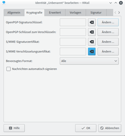
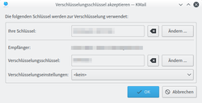

Verschlüsselung
Dieser Artikel wurde für die folgenden Ubuntu-Versionen getestet:
Ubuntu 16.04 Xenial Xerus
Ubuntu 14.04 Trusty Tahr
Zum Verständnis dieses Artikels sind folgende Seiten hilfreich:
KMail unterstützt das automatische verschlüsseln per OpenPGP und S/MIME. Damit ist es möglich Mails zu verschlüsseln und verschlüsselte E-Mails zu entschlüsseln. Benötigt wird lediglich:
Ein eigenes Schlüsselpaar bestehend aus öffentlichem und privatem Schlüssel[1]. Der öffentliche Schlüssel ist den Kommunikationspartnern zu übermitteln. Diese können dann eine E-Mail mit dem öffentlichen Schlüssel verschlüsseln und absenden. Der private Schlüssel dient zum Entschlüsseln und öffnen der Mails dieser Partner.
Der öffentliche Schlüssel des Kommunikationspartners. Dieser dient zum verschlüsseln von E-Mails an diesen Partner.
Zur grafischen Schlüsselverwaltung sollte folgendes Paket installiert sein:
kleopatra
 mit apturl
mit apturl
Paketliste zum Kopieren:
sudo apt-get install kleopatra
sudo aptitude install kleopatra
PGP-Schlüssel eintragen¶
Schlüssel des Partners¶
Erhält man einen öffentlichen Schlüssel (*.asc-Datei) per E-Mail, so kann dieser einfach per Klick in Kleopatra eingelesen werden. Ohne Signierung wird beim Versenden von verschlüsselten Nachrichten eine Warnung ausgegeben, die man bestätigen muss.
Möchte man Grundsätzlich mit einem Kommunikationspartner verschlüsselte E-Mails austauschen, so sollte man den Schlüssel in KAddressBook eintragen.
Eigener Schlüssel¶
|  |
| Schlüssel in den Einstellungen festlegen |
Der eigene Schlüssel zum entschlüsseln einer eingehenden Nachricht wird wie folgt hinterlegt:
Unter "Einstellungen -> KMail einrichten -> Identitäten" die Identität markieren, deren Einstellung man ändern möchte. Nach
 auf "Ändern", öffnet sich der Dialog "Identität bearbeiten".
auf "Ändern", öffnet sich der Dialog "Identität bearbeiten".
Folgende Möglichkeiten sind hier gegeben:
"OpenPGP-Signaturschlüssel": Wird hier der Schlüssel eingetragen, können ausgehende Mails signiert werden.
"OpenPGP-Schlüssel zum Verschlüsseln": Hier ist der Schlüssel einzutragen, um verschlüsselte E-Mails automatisch entschlüsseln zu können. Mit diesem Eintrag wird auch der Menüpunkt "Anhängen -> Eigenen öffentlichen Schlüssel anhängen" im Nachrichteneditor zur Verfügung gestellt.
"S/MIME-Signaturzertifikat": Analog zu 1. für S/MIME.
"S/MIME-Verschlüsselungszertifikat": Analog zu 2. für S/MIME.
"Bevorzugtes Verschlüsselungsformat für Nachrichten": Die Voreinstellung "Alle" kann ohne Bedenken übernommen werden.
Durch auf "Ändern" bei der jeweiligen Option, öffnet sich ein weiteres Fenster, in dem man seine Schlüssel-ID auswählen kann. Die Liste ist nach der E-Mail-Adresse der Identität gefiltert. Möchte man einen anderen Schlüssel für diese Identität benutzen, so leert man einfach das Feld "Suchen nach:" um sich alle verfügbaren Schlüssel-ID's anzeigen zu lassen.
Nach Auswahl und auf "OK", wird der Schlüssel übernommen.
E-Mail verschlüsseln¶
|  |
| Schlüssel beim Versenden auswählen |
Möchte man eine E-Mail verschlüsseln und hat den öffentlichen Schlüssel des Partners in KAddressBook hinterlegt, klickt man einfach in der Werkzeugleiste auf "Verschlüsseln" oder verwendet die Option im Menü unter "Optionen->Verschlüsseln".
Das E-Mailfenster erhält daraufhin einen entsprechenden Hinweis.
Nach auf "Senden", wird man im Fenster "Verschlüsselungsschlüssel akzeptieren" noch gefragt, ob diese Einstellungen richtig sind. In der Regel sind hier keine weiteren Einstellungen vorzunehmen und die Nachricht wird per Klick auf "OK" versendet.
Mehrere Empfänger¶
Auch das Senden von verschlüsselten Nachrichten an mehrere Empfänger ist möglich. Hierbei muss allerdings für jeden Empfänger eine Schlüssel-ID in KAddressBook hinterlegt sein.
Hinweis:
Ein gleichzeitiges Versenden an Empfängern mit und ohne Schlüssel ist nicht möglich!
Verschlüsselte E-Mail lesen¶
Empfangene verschlüsselte Nachrichten erhalten das Symbol . Im Vorschaufenster wird anstatt der Nachricht ein entsprechender Text angezeigt. Nach auf "Nachricht entschlüsseln" und Eingabe seines Passwortes für den Schlüssel, wird die Nachricht entschlüsselt und im Vorschaufenster angezeigt.
Hinweis:
Nach Eingabe des Passwortes muss dieses für 600 Sekunden nicht mehr erneut eingegeben werden. Möchte man diese Zeitspanne ändern, so findet man die Einstellung dazu in "Einstellungen -> KMail einrichten -> Sicherheit -> Kryptografie-Module -> openPGP(gpg) -> Einrichten -> PGP-Agent -> Optionen zur Einstellung der Sicherheit -> Lasse PINs im Cache nach N Sekunden verfallen", bzw. unter 11.10 "Einstellungen -> KMail einrichten -> Sicherheit -> GnuPG-Einstellungen -> GPG Agent -> Optionen zur Einstellung der Sicherheit -> Lasse PINs im Cache nach N Sekunden verfallen"
E-Mail signieren¶
Mit einer digitalen Signatur kann der Empfänger überprüfen, ob die E-Mail auf dem Weg zum Empfänger verändert wurde. Ebenso stellt eine Signatur eine Art elektronischer Unterschrift dar und zeigt dem Empfänger, das diese E-Mail auch tatsächlich vom erwarteten Absender stammt.
Man signiert eine Nachricht entweder über "Optionen -> Nachricht signieren" oder über den Punkt "Signieren" in der Werkzeugleiste.
Signierte Nachrichten erhalten das Symbol .
Zugehörige Einstellungen¶
Weitere Einstellungen zur Verschlüsselung in KMail findet man unter "Einstellungen -> KMail einrichten -> Sicherheit" in folgenden Reitern:
"Lesen" - Automatische Entschlüsselung
"Nachrichten erstellen" - Automatische signieren und weitere Verschlüsselungseinstellungen
"Kryptografie Module" - Allgemeine Einstellungen zu PGP und S/MIME
 - Leichte Einführung in das Thema und Nutzung unter Windows
- Leichte Einführung in das Thema und Nutzung unter Windows- Erstellt mit Inyoka
-
 2004 – 2017 ubuntuusers.de • Einige Rechte vorbehalten
2004 – 2017 ubuntuusers.de • Einige Rechte vorbehalten
Lizenz • Kontakt • Datenschutz • Impressum • Serverstatus -
Serverhousing gespendet von